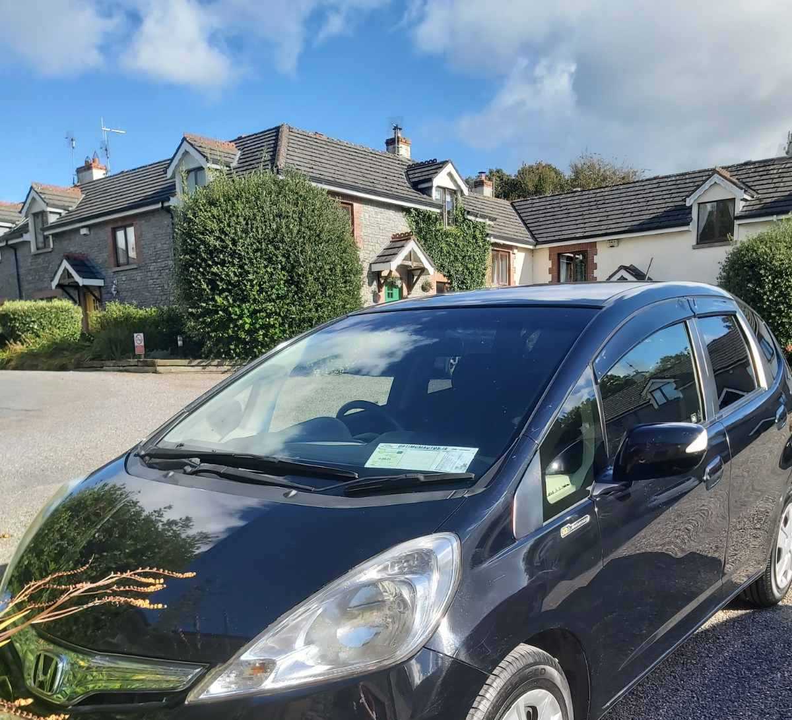

These interests can be found in the navigation bar above with a link to each.
Links to my Gmail, GitHub and LinkedIn are accessible at the footer of the page.
Otaku
Ideas
Thinking of listing my manga collection on the page soon!
I am a big fan of Pokémon Adventures along with Way of the Househusband and Silver Spoon.
Professional Profile
Press Ctrl + T to open a new tab.
I have recently completed a certification in HTML & CSS and I wanted to showcase my newly acquired skills to potential employers.I am currently studying JavaScript to add to the HTML & CSS certification above.
I have also completed a Higher Diploma in Data Analytics at Atlantic Technological University (ATU) Galway.
It contained many interesting modules to study, but I found that Web Application Development and Applied Databases were the modules I wished to further learn about.
- HTML:
- HTML is a programming language that allows web designers to implement textual content in their web pages.
- CSS:
- CSS is a programming language that allows web designers to implement various styles on HTML elements in their web pages.
- JavaScript:
- js is a programming language that allows web designers to implement functions in their web pages.
I also have qualifications and work experience with pharmaceutical and medical device companies. During my time studying Chemical & Pharmaceutical Science at Atlantic Technological University (ATU) Galway, I used various chemicals such as H2SO4 (Sulphuric Acid), and performed numerous calculations with acquired experimental data, using powers such as 3.142.
Cars

I never had an avid interest in driving from a young age, mainly due to the cost of purchasing a car, as well as regularly maintaining it with insurance costs etc just was not feasible for me.
Once I dug in and got driving lessons and passed the test, my brother found this lovely starter car for me!
A bargain at €500, this Toyota Yaris came with a 1L engine so the tax was very affordable as were the insurance costs.

After 2 years of driving, I could take those Novice stickers off my Yaris!
But I wanted to reward myself by upgrading from my reliable Yaris to a more eco-friendly model.
Here we have the Honda Fit, imported from Japan (also known as the Honda Jazz in Europe).
My brother and I decided to take this for a test drive down in Ennis, and one aspect about the car that excited me was the automatic transmission.
I also was interested to learn more about the self-charging hybrid aspect of the Honda Fit, as I felt more eco-friendly cars were appearing around Ireland
and I wanted to sample the technology for myself.
I found it to be fantastic, the automatic transmission made accelerating so smooth, so seamless compared to manual transmission.
I gently push down on the accelerator and the electric motor would move my car forward, as opposed to firmly pushing down which activates the internal combustion engine (ICE).
I noticed I have saved quite a chunk of cash on topping up my fuel, I am mindful of how I drive and use of the electric motor requires less fuel to consume compared to traditional means.
Check out Optimum Autos where I purchased the Honda Fit, they also stock other Japanese imports, including the Toyota Aqua & Mitsubishi Mirage.
| Yaris | Fit |
| Toyota Released in Europe: March 1999 | Honda Fit Released in Europe: |
| Silver | Black |
| Yaris | Fit |
| Toyota Released in Europe: March 1999 | Honda Fit Released in Europe: |
| Silver | Black |
Holidays
- Manchester 2008 & 2009
- New York City & Boston 2010
- Edinburgh 2010 & 2013
- Barcelona 2010
- Dingle 2011
- Salou 2014
- Munich 2016
- Paris 2017
- Athlone 2018
- Croatia 2023

Charity Work
#include
int main()
{
printf("This article will outline charity work I have
participated in with numerous charities who do
wonderful work in matters that are important to
me.");
}

- Trocaire
- Aware
- Irish Cancer Society
- SpecialEffect
- 2005-2007
- 2010
- 2014
- 2017